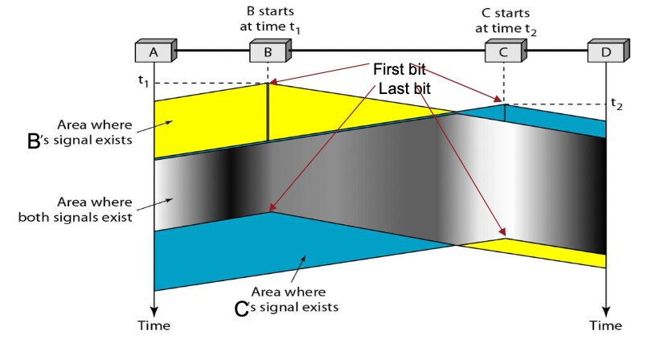
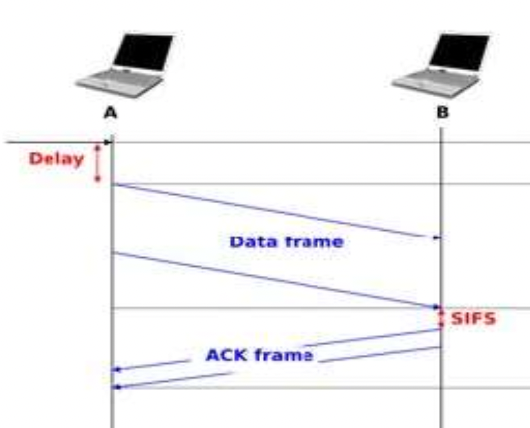
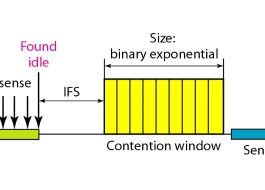

충남대학교 컴퓨터공학과 김상하 교수님의 "데이터 통신" 강의를 필기한 내용입니다.
강의를 듣고 필기한 내용이기에, 다소 잘못된 부분과 구어적 표현 이 포함되어 있을 수 있습니다.
Multiple Access Control(MAC)
- Data link layer에서 Data link control(지금까지 배운 거)와 함께 제일 중요한 내용이다
- 하나의 매체(회선)을 여러명이 접근할 수 있게 하는 기술 - 이럴 때 혼선/충돌이 일어나지 않게 하는 기술
- 한사람이 데이터를 보낼때는 다른사람은 보내지 않다가 이사람이 끝나면 그때기 보내기 시작하는 방법을 이용한다
- 에러는 회선에서의 자연적인 노이즈때문에 에러가 나기도 하지만 다른사람의 데이터랑 충돌해서 에러가 나기도 한다 - 이때 충돌에 의한 에러는 자연적 요인이 아니므로 우리가 어느정도 제어가 가능하다. 따라서 이러한 에러를 최대한 줄이고자 하는 것이 **Multiple Access Control(Resolution)**이며, 자연적이거나 충돌에 의한 에러가 있음에도 ACK, NAK등의 기법을 이용해 제대로 수신할 수 있는 방안을 마련한 것이 Data Link Control이다
- 즉, 정리해보면 다음과 같다
- Physical Layer는 자연적으로 일어나는 노이즈 등으로부터 최대한 에러가 발생하지 않게 막는 계층이고
- Data Link Layer의 Data Link Control은 에러가 나도 재전송받거나 correction등의 방법을 통해 에러가 전혀 없게 하는 역할이고
- Data Link Layer의 Media Access Control은 데이터들 간의 충돌에 의한 에러를 막는 역할인 것이다
- MAC은 크게 Random Access Protocol, Controlled Access Protocol, Channelization Protocol이렇게 나누어진다 - 하지만 얘네들이 별개가 아니라 다 통합되더라
Random Access
- 데이터를 보내고자 하는 포인트들이 경쟁을 통해 그 매체의 이용권을 얻는 것
- 순전히 경쟁을 통해 이용권을 얻으므로 랜덤하게 이용권이 주어진다 - 즉, 운나쁘면 한놈이 오랫동안 점유하는것도 가능하다 이말이야 - 이러한 특성을 Memoryless property라고 한다
ALOHA 알고리즘
- 봐봐라
- 만약에 프레임 여러개가 겹쳐서 충돌이 났다 쳐봐라
- 그러면 이제 충돌난애들은 ack가 안오므로 타임아웃이 걸려 다시 보내것제?
- 근데 만약에 컴퓨터들마다 타임아웃 걸리는 시간이 다 똑같이 설정되어있으면
- 아까처럼 똑같이 보내고 다같이 충돌나게 되더라 이말이여
- 이러한 문제를 해결하는게 ALOHA 알고리즘이다

- 여기서 Tp란 데이터가 한번 전송되는데 걸리는 시간이다. 근데 데이터를 보내고 ack를 받아야 하므로 왕복이니까 2를 곱해주는거
- 여기서 이제 ACK를 받지 못하면 시도 횟수를 뜻하는 K를 1 올리게 된다 이 K는 일반적으로 15를 최대치로 두며 이 최대치를 넘어가면 Abort(포기)한다 - 15번을 반복해서 보내보고 안되면 포기한다는 뜻
- 그리고 이번에는. 임의의 시간간격동안 기다린 다음 프레임을 전송한다.
- 위에서 말한 저 충돌 이후에도 모두가 같은시간을 기다린후 다같이 보내 또다시 충돌이 일어나는 문제를 해결하기 위해 다른 컴퓨터와의 랜덤한 시간차를 두는 것 이다
- 여기서 난수는 0~(2^k - 1) 중에 아무 숫자나 랜덤으로 고르는 과정을 거치는데 이것을 Binary Back-off 라고 하고 이로부터 결정을 R로 표현한다
- 그리고 R * Tp를 통해 대기시간을 산정하고 대기한다
- 하지만 단점이 있다 - 실제로 써보니까 딴놈의 전송이 거의 다 끝나갈때쯤에 또 딴놈이 전송시작하고 이런식으로 걸치는 일이 많이 일어나더라 - 효율을 계산해봤더니 매체의 최대 전송 역량중 20프로밖에 발휘를 못하더라
Slotted ALOHA 알고리즘
- 얘는 이제 그냥 ALOHA 알고리즘과 동일하나 슬롯을 정해서 이때만 보낼 수 있다는 개념이다

- 이게 뭔말인가 하면 내가 상위 계층으로부터 프레임을 받으면 바로 보내는게 일반적인 ALOHA 알고리즘이다 - 얘는 그럼 프레임이 출발할 수 있는 시간이 정해져있지 않고 연속적으로 분포한다
- 슬롯으로 정해져있다는 말은 위의 그림 보면 이해될거다
- 프레임이 출발할 수 있는 시간이 일정한 시간간격으로 정해져 있어 이때만 프레임을 보낼 수 있다는 것
- 따라서 중간에 걸쳐있으면 잠깐 기다렸다가 슬롯이 시작되는 시점에 전송되는 것
- 그리고 슬롯 오면 바로 전송하는게 아닌 여기서도 랜덤을 사용한다 - 랜덤하게 숫자를 하나 뽑아 그 수만큼 슬롯을 넘기고 그 다음에 전송을 시작하는 것
- 얘는 이제 장점이 완전히 겹치는 경우는 존재하지만 애매하게 겹치는 경우는 존재하지 않는다는것이다 - 따라서 충돌의 확률이 줄어드는 것
- 얘는 이제 효율이 36.8프로로 기존 알로하보다 2배나 개선시킬 수 있다
Carrier Sense Multiple Access(CSMA)
- Carrier Sense라는 것은 이제 전송매체에 귀를 기울이고 듣고 있다는 것을 뜻한다
- 이 방법은 이제 계속 주시하고있다가 아무도 매체를 이용하지 않는 시점에 전송을 시작하는 방법이다
- 충돌이 일어나는 경우는 두가지가 있다

- 첫번째는 위의 경우처럼 저쪽에서 전송을 시작했는데 아직까지 내가 있는 위치까지는 전달이 안돼서 내가 전송을 시작하게 되는 경우이다.
- 위의 그림에서 보면 B가 전송을 시작했는데(노란색) C까지 아직 도달하지 않아 idle하다고 판단해 프레임을 전송한다(파란색). 하지만 B의 프레임이 오던 중이었기 때문에 충돌이 일어난다(회색).
- 하지만 보통 전파속도가 아주 빠르기 때문에 흔하게 일어나지는 않는다
- 두번째는 지금 이미 한놈이 데이터를 보내고 있고 그게 끝나기만을 기다리는 놈들이 여러명 있을 때 이제 보내던 애가 끝나자마자 얘네들이 한꺼번에 들어오게 되는 경우이다
기다림이 끝났을 때 어떻게 행공할것인가

- 위 그림은 좀 이상하긴 함
- 1-persistant : 계속 주시하다가 전송이 끝나자마자 바로 드가는 것 - 얘는 위에서 말한거처럼 여러명이 한꺼번에 들어올 수 있게 된다 - 근데 이더넷에서는 이것을 주로 사용한댄다
- non-persistant : 얘는 계속 주시하고있는게 아니고 처음에 한번 보고 아직 보내는 중이면 랜덤한 시간을 기다렸다가 본다음 없으면 그때 드가는 방법이다 - 없음이 감지되면 바로 드가긴 하지만 그 감지하는 시점을 랜덤하게 불연속적으로 가지는 것
- p-persistant : 얘도 슬롯의 개념을 이용한다
- 보면 위의 그림은 좀 잘못되었는데
- 일단 Channel이 idle한지 확인한다
- idle하면 다음단계로 가고 아니면 다시 확인한다
- Probability outcome을 하나 뽑는다. 난수를 하나 뽑는다는 소리이다. 그리고 그 수가 p라는 특정한 수보다 작은지 아닌지 확인한다
- 작으면 내보내고 아니면 다음단계로 넘어간다
- 다음 슬롯을 기다리고 슬롯이 오면 Channel이 idle한지 아닌지 다시 판단한다
- idle하면 다시 2번으로 가고 busy하면 다시 1번으로 간다
- 쟤네들 중에 뭘 사용하든 별 상관은 없다
CSMA with Collision Detection(CSMA/CD)
- 위와 같은 CSMA기술을 이용해도 충돌을 없앨수는 없다
- CSMA에서 충돌이 일어났는지를 알아내는 방법을 **CSMA with Collision Detection(CSMA / CD)**라고 하는 것
- 보면 파동의 중첩을 기본 원리로 한다 - 즉, 파동 두개가 겹쳐지면 중첩이 일어나 진폭의 세기가 세지는 현상을 이용하게 되는 것
- 따라서 Carrier Sencing을 했을 때 신호의 세기에 따라 구별해보면 다음과 같다
- 세기가 0 : idle한(비어있는) 상태
- 세기가 정상 : busy(누군가가 전송중)인 상태
- 세기가 비정상 : 충돌이 일어난 상태
충돌을 감지했을때 좋은점

- 봐봐라
- 위에 그림 보면 A가 보낼 데이터의 양이 많아 t1시간부터 그 이후로 계속 신호를 보내는 중이다
- 근데 C는 그걸 모르고 t2시간에(A가 보낸 데이터가 아직 도달하기 전에) 데이터를 전송했다고 치자
- 그럼 저 둘이만나는 지점에서 충돌이 일어나게 되고 그럼 C한테는 t3의 시점에 충돌이 감지되고, A한테는 t4의 시점에 충돌이 감지되게 된다
- 그럼 A는 저 t4시점에 신호를 끊게 된다 - 어차피 충돌이 일어났으므로 더 이상 보내는 것은 무의미하므로
- 따라서 아래 그림처럼 t4이후에 신호를 더 이상 보내지 않고 신호가 끊기게 되는 것이다
- 신호를 보내는 중에 충돌이 감지되면 신호를 더 보내지 않고 끊음으로써 무의미한 작업을 줄이고, 시간도 더 효율적으로 사용할 수 있게 된다
- 그냥 CSMA의 경우에는 충돌이 일어나도 다 보내게 되는데 CSMA / CD는 충돌을 감지하고 일찍 전송을 끊는다는 차이점이 있다
- 이때 충돌이 일어나는 베스트와 워스트 경우의 수를 보면
- 송신측과 가까운 쪽에서 총돌이 일어나 송신측이 바로 알게 되는 경우가 제일 베스트
- 수신측과 가까운 쪽에서 충돌이 일어나 송신측이 늦게 알게 되는 경우가 제일 워스트이다
- 그리고 이렇게 송신측이 충돌을 알게 되는데 걸리는 최대 시간은 워스트 케이스인 경우이므로 2 * 편도시간(Tp) 이다.
- 근데 만약 송신을 하는데 걸리는 시간이 이것보다 작고 최악의 경우가 일어나 송신을 끝내고 난 후에 충돌을 감지하게 되면 CSMA / CD 기술은 아무 효용도 없게 된다
- 따라서 CSMA / CD를 사용하려면 적어도 송신시간이 저것보단 길어야 된다
- 따라서 CSMA / CD에 대한 플로우 차트는 다음과 같다 :

- 먼저 시도횟수(K) = 0으로 시작한다
- 그다음 Persistence중 하나를 골라 수행하여 적정한 시간에 프레임을 전송한다. 그리고 전송이 끝나거나 충돌이 감지되는지 수시로 확인한다
- 전송이 끝나거나 충돌이 감지되지 않으면 다시 확인하고, 둘 중 하나에 해당하면 다음 단계로 넘어간다
- 전송 완료된 것인지 아니면 충돌에 의해 중단된 것인지 판단한다
- 만일 완료된 것이면 전송 성공인 것이고
- 중단된 것이면 다음단계로 넘어간다
- Jamming Signal을 보낸다는데 이게 뭔지는 모르겠고 시도횟수(K)를 하나 올려 시도횟수 최대값(15)보다 작은지 판단한다
- 만일 최대값보다 크다면 전송 취소(Abort)하고
- 그렇지 않다면 Binary Back-off를 실시해 난수 R를 하나 고르고 Tb = R * Tp를 통해 대기시간을 산정하고 대기한다
- 대기시간이 만료되면 다시 2번으로 돌아간다
CSMA with Collision Avoidance(CSMA / CA)
- 그냥 CSMA의 경우에는 무선의 환경에서도 사용 가능하나 CSMA / CD의 경우에는 무선환경에서는 사용하지 못한다
- Collision Detection과정에서 사용되는 진폭에 따른 충돌 감지는 무선환경에서는 진폭변화가 크지 않기 때문에 충돌에 의한 것인지 아닌지를 판단하기가 힘들기 때문
Inter Frame Space(IFS)

- 일단 통신의 과정은 그냥 보낸다고 끝이 아니라 보내고 나서 ack까지 받는 것까지 해야 하나의 프레임을 전송 완료한것이다라고 말할 수 있다
- 이때 전송이 완료되고 회선이 비워지더라도 바로 보내지 않고 ACK보내는 시간을 배려해주기 위해 무조건적으로 대기해야되는 시간을 IFS라고 하며 IFS의 종류에는 여러가지가 있다
- 먼저 수신자 입장에서 프레임을 수신하고 ACK를 송신할때 바로 보낼 수 있는게 아니라 수신 모드에서 ACK 송신모드로 전환하는 과정이 필요한데 이 과정에 소요되는 시간을 Short Inter Frame Space(SIFS) 라고 하는 것 이다
- 즉, SIFS는 수신 이후 ACK전송까지 걸리는 시간이므로 최소한적으로 대기해야되는 시간인 것이다
- SIFS말고 다른 IFS들은 차차 등장하게 된다
- 그래서 엿듣고있는 놈들은 중간의 SIFS시간까지 전부 포함해서 회선이 busy인 것으로 판단하게 되는 것 이다
- 이제 CSMA / CA에서는 회선이 idle해지면 바로 보내는게 아니라 일단 SIFS만큼의 시간을 기다리고, binary back-off만큼의 시간을 추가적으로 기다린 후 회선이 여전히 비었으면 보내게 된다
- CSMA / CD에서는 저 binary backoff를 충돌이 났을 때에 주로 사용하는데 CSMA / CA에서는 SIFS이후 기다리는 시간에 사용한다는 것이 차이점이다

- 여기서 이제 Contention window라는 말이 나오게 되는데 이게 뭐냐면 binary backoff를 통해 난수를 하나 뽑을 때 2^시도횟수(K) - 1개의 상자가 있고 여기에서 그것중에 하나를 고르는 식으로 난수의 생성이 이루어지는데 이때의 상자를 저거라고 부르는 것 이다.

- 위 그림이 이 CSMA / CA에 대한 플로우 차트이다
- 마찬가지로 시도횟수(K)로 시작한다
- 그리고 Channel이 idle한지 계속 확인한다
- idle해지면 다음단계로 넘어간다
- 그리고 우선 IFS(SIFS) 를 대기하고 아직도 idle한지 확인한다
- 여전히 idle하면 다음단계로 넘어가지만 busy하다면 다시 2번으로 돌아간다
- Binary Back-off를 시도하고 나온 난수 R만큼의 슬롯을 넘긴다. 그리고 프레임을 전송한뒤 타임아웃될때까지 ACK를 기다린다
- 만일 ACK가 수신되면 성공이지만 그게 아니라면 다음단계로 넘어간다
- 시도횟수(K)를 1 증가시키고 이게 최댓값보다 큰지 검사한다
- 최댓값보다 크다면 전송 취소(Abort)하고 아니라면 2번으로 돌아간다
- 근데 보면 binary backoff로 구한 난수만큼의 슬롯을 지나치고 그 난수에 해당하는 슬롯이 왔을때 프레임을 전송하는 것으로 보아 p-persistance에 IFS시간을 추가한 것과 유사하다는 것을 알 수 있다
- CSMA / CA는 지금의 와이파이 프로토콜의 기반이 되는 기술 이라고 할 수 있다
Controlled Access
- Controlled Access는 회선에 접근하는 station들을 잘 컨트롤해서 충돌이 아예 일어나지 않게 하는기법이다
- 얘는 이제 Reservation, Polling, Token Passing의 방법이 존재한다
Reservation
- 얘는 이제 “어떤” 기준점을 잡는 놈이 송신할 순서를 미리 정해 이것을 미니 프레임에 담아 전송을 한다
- 그러면 나머지가 이것을 수신하고 자기 차례가 몇번째인지 확인한 후, 자기 차례가 오면 송신을 하는 구조
- 하지만 이론적이 내용일 뿐 실제로는 쓰이지 않는댄다
Polling

- 얘도 이제 기준점이 필요한데 이 중앙 시스템을 Primary라고 한다
Station에서 Primary로 데이터를 보내고자 할 때
- 먼저 primary가 Poll을 보내 보낼 데이터가 있는지 묻게 된다
- Poll은 보낼 데이터가 있는지 station에게 묻는 것을 말함
- primary의 중앙 통제 하에 모든 통신이 이루어지므로 station이 먼저 데이터를 보낼 수는 없고 primary의 poll이 들어오면 그때 데이터를 보낼 수 있는 권한을 얻게 되는 것이다
- 그리고 만약에 station이 보낼 데이터가 없으면 NAK을 보낸다
- 하지만 station이 보낼 데이터가 있으면 Data를 보내고 primary는 수신했다는 뜻으로 ACK를 송신한다
Primary에서 Station로 데이터를 보내고자 할 때
- 이것도 먼저 primary가 먼저 보내게 되는데 이때는 SEL을 보내게 된다
- SEL은 보낼게 있는데 받을 준비가 되었느냐는 뜻이다 - QRV같은놈이제
- 이때 station이 준비가 되었으면 ACK를 보내고
- 그럼 primary는 Data를 보내게 된다
- station이 제대로 수신했으면 ACK를 보내는 것으로 통신이 마무리되게 된다
Station -> Station
- 일단 Polling방식에서는 아까말한대로 통신이 primary의 통제 하에 이루어 지므로 station이 먼저 데이터를 보낼 수는 없다
- 따라서 송신 station은 primary의 Poll을 기다렸다가 오면 Data를 먼저 primary로 보낸다
- 그리고 primary가 수신 station으로 SEL을 보내 Data를 전송하는 방식으로 station간의 통신이 이루어지게 된다
- 따라서 station이 station으로 바로 데이터를 보낼 수는 없고 primary를 거쳐야만 station → station의 통신이 가능하다
Token Passing
- 얘는 이제 약간 수건돌리기같은거다
- 회선을 사용할 권한을 갖고있는 놈한테 Token이 주어지는데
- 이것을 갖고있는 놈이 데이터를 다 보내고, 데이터를 다 보냈으면 다른놈한테 이 Token 을 전달하는 방식으로 통신이 이루어짐
- 하지만 얘도 별로 사용하지 않는댄다
Channelization Protocol
- 이제까지는 한 station이 대역폭 전체를 사용해 통신할 떄 순서를 나눠서 충돌이 일어나지 않게 하는 방법이었다면, 얘는 대역폭으로 사용시간에 따라, 주파수에 따라, 그리고 코드라는 것에 따라 나눠서 통신하여 충돌을 줄이는 개념이다
- 넓은 대역폭을 잘라 통신하는 방법이라 하니 앞에서 배운 무언가가 막 생각나쥬? - Multiplexing이랑 Spreading을 활용하는 방법이다
- 이용하는 사람이 많아지면 그만큼 더 조밀하게 자르고(더 느려짐), 적어지면 더 널찍하게 대역폭을 잘라 사용(더 빨라짐) 하게 되는데 그래도 한번에 여러 station이 동시에 회선을 사용할 수 있다는 장점이 있다
- 요즘은 이 방법들을 한가지만 사용하는게 아니고 다 모아서 장점들만 살려 통신하는 기법을 사용한다고 한다네
- FDMA와, TDMA, CDMA등의 방법이 있다 - 하지만 학부때는 FDMA와 TDMA는 자세하게는 설명하지 않는댄다
Frequency-Division Multiple Access(FDMA)
- 회선의 대역폭 주파수를 잘라 통신하는 기법
- FDM과 대응되는 개념인거지
Time-Division Multiple Access(TDMA)
- 회선을 사용하는 시간을 나눠 통신하는 기법
- TDM과 대응되는 개념인거지
Code-Division Multiple Access(CDMA)
- 얘는 이제 DSSS를 활용하는 방법이다 - 뭔지 기억 안나면 Spread Spectrum부분 다시 읽고 와라
- 만약에 spreading code를 절묘하게 짜게 된다면 데이터의 충돌이 일어나도 원 데이터를 꺼낼 수 있다 - 한 대역폭에 시간차를 두지 않고 통신해 당연히 충돌이 나지만 그럼에도 불구하고 잘 짜여진 Spreading Code를 이용해 충돌 데이터에서 원 데이터를 꺼내는 방식으로 충돌을 무시하는 방법이 CDMA의 개념이다
작동방식

- 봐봐라
- 일단 맨 위에 있는게 진폭 설정 방식이다 - 데이터0은 진폭(-1) 으로, 1은 진폭(+1) 으로, 데이터가 없을때는 진폭(0) 으로
- 그리고 저 박스들이 다 station이다
- 저 박스들은 각자의 spreading code를 가지고 있다 - 저 분홍색 []가 spreading code이다
- 그리고 박스 안으로 진폭이 들어오면 저 spreading code와 곱해지고 이 곱해진 결과가 박스와 channel사이에 있는 검은 []다
- 얘네가 이제 충돌이 일어난 결과가 노란색 박스가 되는데
- 근데 신기하게도 여기에 각자의 spreading code를 곱하면 원래의 데이터를 뽑아낼 수 있게 된다
- 만약에 station 2 가 보낸 데이터가 뭔지 알고 싶으면 station 2 의 spreading code인 C2를 곱해서 더하면 -4가 나오게 된다
- 근데 -4는 음수이므로 데이터0으로 판단하게 되는데 이것은 정확하게 station 2 가 보낸 데이터와 동일하다
- 나머지 station이 보낸 데이터를 확인하고 싶어 각자의 spreading code를 곱해봐도 원래의 데이터가 나오게 된다
Spreading Code 만드는법

- Walsh table을 사용하면 Spreading Code를 손쉽게 만들어 낼 수 있다
- 위쪽이 귀납법으로 만들어진 table의 생성규칙, 아랫쪽이 생성 예시이다
- “Wn바”는 Wn의 모든 부호를 반대로 바꿔준다는 뜻이다
- 저 생성된 행렬의 행(열)단위로 읽으면 그게 spreading code가 되는 것